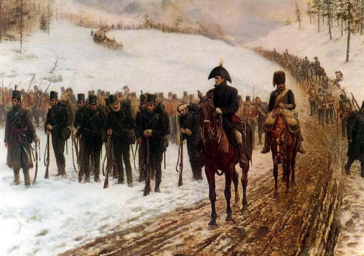
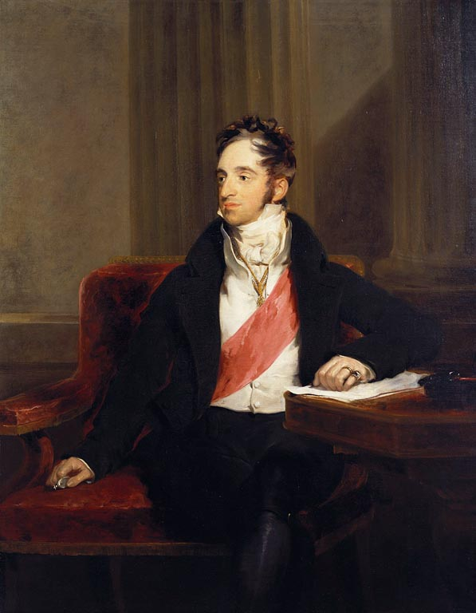
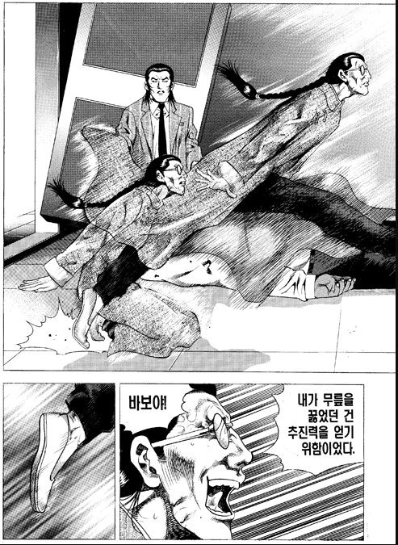
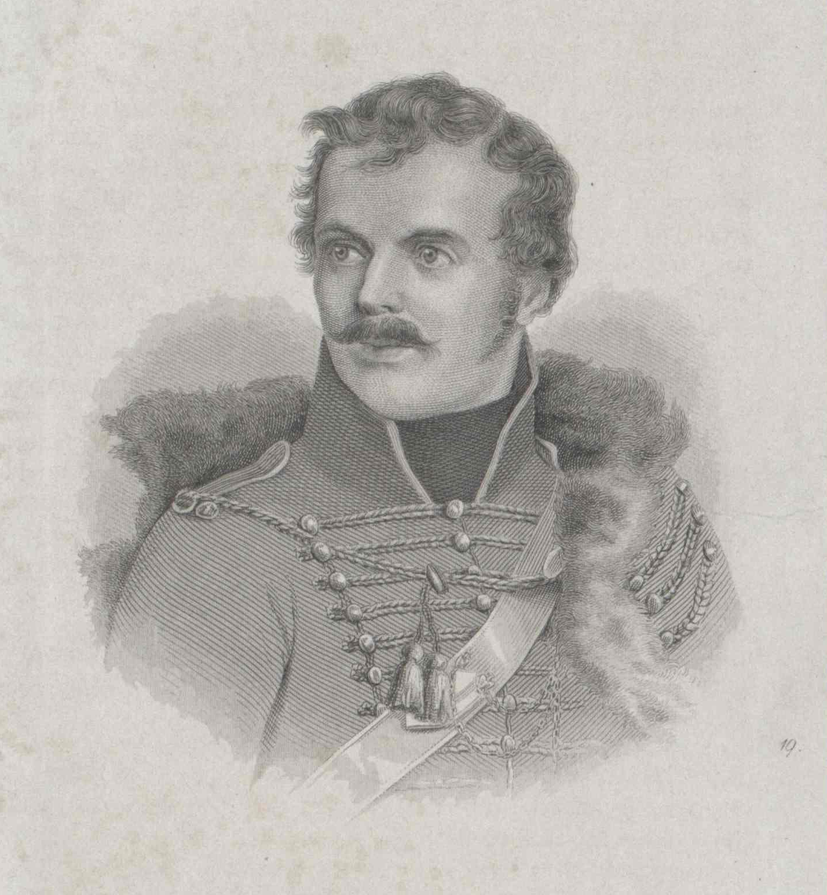

드리사(Drissa)로 가는 길 - 후퇴하는 러시아군의 사정
게시: 2019-12-30T06:30:25+09:00
일반적으로 후퇴하는 군대는 비록 작전상 후퇴라고 할지라도 사기가 매우 떨어지기 마련입니다. 특히 자국 내에서 영토를 내주며 후퇴할 때는 더욱 그렇습니다. 1808년 말 자국 영토도 아닌 스페인에서 영국으로 탈출하기 위해 코루냐 항구로 후퇴하던 존 무어 경(Sir John Moore)의 영국군이 추위와 와인 속에서 그야말로 녹아내리던 것을 상기해보면 쉽게 상상할 수 있습니다. 또 후퇴할 때는 사기 뿐만 아니라 부상자와 환자, 쌓아놓았던 각종 보급품의 처분 등 온갖 문제가 발생하기 마련입니다. 당장 후방 걱정은 하지 않고 날랜 부대들로 쫓아가기만 하면 되는 추격군의 입장과, 부상병과 보급품을 수습해서 움직여야 하는 후퇴군의 입장은 다를 수 밖에 없고, 보통 그런 문제들 때문에 결국은 후퇴하는 군대는 추격하는 군대에게 따라잡히기 마련입니다. 그런 것을 잘 알고 있기에, 후퇴하는 군대의 사기는 더욱 나빠지는 악순환에 빠져들 수 밖에 없습니다. 1812년, 유럽 사상 최강의 군대였던 그랑다르메에게 쫓기는 러시아군의 후퇴도 마찬가지였을 것입니다. 더군다나 그랑다르메를 지휘하는 총사령관이 유럽 사상, 아니 지금도 인류 역사상 최고의 장군 중 하나라는 나폴레옹이었으니 더욱 그랬을 것입니다.

(1808년 말~1809년 초의 스페인 북부 갈리시아 지방의 매서운 겨울 바람 속에서 후퇴하는 영국군의 후위부대였던 제95 라이플 연대의 후퇴 모습입니다. 이 그림은 영국에서 그린 것이니 그나마 꽤 질서정연하게 나옵니다만, 실제 벌어졌던 아비규환에 대해서는 http://blog.daum.net/nasica/6862633 를 참조하시기 바랍니다.)
하지만 의외로 빌나에서 후퇴하던 러시아군의 사기는 그렇게 나쁘지 않았습니다. 먼저 여기에는 제1군 사령관 바클레이 드 톨리의 유능함이 큰 역할을 했습니다. 그는 어려운 상황 속에서도 이번 후퇴의 의미와 목적을 잊지 않았고 빠른 후퇴보다는 군의 응집과 규율 관리가 더욱 중요하다는 것을 명심하고 있었습니다. 뛰어난 행정가였던 그는 각 부대의 후퇴 순서와 경로 등을 세심하게 지휘하며 질서있는 후퇴를 위해 안간힘을 다 했고, 덕분에 러시아 제1군의 후퇴는 놀라울 정도로 순조로왔습니다. 바클레이는 몰랐지만 여기에는 나폴레옹의 실책도 큰 역할을 했습니다. 나폴레옹은 러시아 제1군과 제2군 중 더 약한 제2군을 먼저 요격하려 했고, 제2군의 앞길을 막는 역할에 축지법의 대가 다부를 투입했었습니다. 거기까지는 매우 좋은 판단이었지만 그 뒤를 추격하는 임무를 자기 동생 철부지 제롬에게 맡기는 바람에 모든 것이 망쳐진 것이지요. 아무튼 제1군의 뒤를 쫓는 프랑스군은 러시아군의 후퇴에 대해 깊은 인상을 받고 있었습니다. 먼저, 당연히 러시아군이 후퇴하는 길 위에 많은 수의 마차와 군수품을 버리고 갈 것이라고 예상했지만 의외로 그 수가 매우 적었습니다. 애초에 욕심부리지 않고 가지고 갈 군수품과 버리고 갈 군수품을 철저하게 나누었고, 버리고 가는 군수품은 일찌감치 불을 질러 적의 손에 떨어지지 않게 만들었던 것입니다. 이건 100% 바클레이의 공적이었습니다. 덕분에 후퇴하는 러시아군보다 추격하는 프랑스군이 버리고 가는 짐마차가 더 많을 정도였습니다. 또 러시아군 사병들의 탈영률이 허겁지겁 이루어지는 후퇴치고는 매우 낮았습니다. 이는 당시 그들이 있던 곳이 러시아 땅이라고는 하지만 사실은 러시아 본토라기 보다는 옛 폴란드-리투아니아 땅이었기 때문에 러시아군 사병들에게는 낯선 외국이나 다름없었기 때문이기도 했습니다. 대신 바클레이가 현지에서 새로 징집했던 폴란드-리투아니아계 병사들 약 1만 명 정도가 후퇴 과정 중에 탈영했습니다. 이들 중 일부는 그랑다르메 소속 폴란드군에게 합류했지만 많은 수는 그냥 집으로 돌아갔습니다. 러시아군 고위층은 매우 태평했습니다. 알렉산드르가 7월 4일 스웨덴 왕세자 베르나도트에게 보낸 편지를 보면 '볼가 강변에서 싸우는 일이 벌어진다고 하더라도, 난 이 전쟁을 몇 년간 끌고 갈 작정이오'라는 내용이 있을 정도로 러시아군 수뇌부는 (불과 십여 일 전까지만 해도 전진하여 공세로 나가자고 아우성 치던 사람들이었는데도) 후퇴를 당연하게 생각했고 조급해하지 않았습니다. 가만히 보면 러시아 장교들의 반응은 잘 모르겠고 주로 외국 출신 고위층들이 특히 태평했던 것 같습니다. 당시 외교관으로서 특별히 하는 일 없이 짜르를 따라다니던 궁정 인사 중 하나였던 네슬로더는 후퇴 길에 다음과 같은 태평한 편지를 아내에게 보내기도 했습니다. (이 편지는 프랑스어로 씌여졌는데, 독일계 귀족이 러시아 짜르를 위해 일하면서 프랑스어로 이야기하는 것이 당시 사회상을 아주 잘 보여줍니다.) "우리의 후퇴에 대해 걱정하지 마시오. On n'a recoulé que pour mieux sauter. (후퇴하는 것은 더 잘 뛰어오르기 위해서라오.)"

(네슬로더 Karl Robert Reichsgraf von Nesselrode-Ehreshoven 입니다. 그는 원래 신성로마제국 귀족 가문 출신으로서, 아버지가 주 포르투갈 러시아 대사로 부임하느라 리스본 항구 인근 바다 위에서 출생하는 특이한 경력을 가지고 있습니다. 그는 아버지의 뒤를 이어 계속 러시아에서 외교관 생활을 했고, 1807년 아일라우 전투 때도 현장에 있었습니다. 1812년 당시 32세의 젊은 나이였던 그는 1816년 러시아 외무장관이 되어 비엔나 체제를 유지하는데 큰 역할을 합니다.)

(이쯤에서 도저히 빠질 수가 없는 명짤입니다... 존경합니다 김성모 화백님.)
짜르는 오히려 기분이 좋은 편에 속했습니다. 그때 즈음해서 러시아군 진영에 프로이센 장교 하나가 나타났기 때문이었습니다. 이 사람의 이름은 레오폴트 폰 뤼초프(Leopold Wichard Heinrich von Lützow)로서 훗날 독일 해군 순양함에도 이름이 붙여진 그 유명한 다른 뤼초프와는 또 다른 인물이었고, 제4차 대불동맹전쟁에서 프로이센이 참패한 이후 군에서 강제 예편된 불만 많은 젊은 장교였습니다. 그는 나폴레옹에게 복수하겠다는 일념으로 오스트리아군에 입대하여 1809년 제5차 대불동맹전쟁에서 싸웠으나 결국 바그람 전투에서 또 패배했는데, 그에 굴하지 않고 이번에는 당시 유럽 대륙에서 유일하게 나폴레옹과 전쟁을 벌이고 있던 스페인으로 가서 거기서 다시 총을 들었습니다. 그러나 1812년 1월 스페인 남부 발렌시아에서 결국 프랑스군에게 포로가 되어 남부 프랑스로 끌려갔는데, 뤼초프는 거기서 탈출하여 걸어서 스위스-독일-폴란드를 거쳐 러시아로 넘어온 것입니다. 바그람 전투 때만 해도 소위에 불과했던 당시 26세의 이 프로이센 청년은 '나폴레옹에게 저항하는 유럽 문명 사회의 정신'을 보여주는 상징으로 짜르에게 대환영을 받았고, 당장 러시아군 육군 중령의 계급이 부여되었습니다. 여담이지만 이 뤼초프는 1815년 나폴레옹이 엘바섬을 탈출하여 다시 황제가 되었다는 소식을 듣자마자 다시 프로이센군에 입대하여 리뉘(Ligny)와 워털루에서 또 나폴레옹과 싸우는 근성을 보여주었고, 결국 프로이센군 고위 장성이 됩니다.

(위 사진은 Leopold von ützow가 아니라 Ludwig Adolf Wilhelm Freiherr von Lützow 입니다. 일반적으로 뤼초프라고 하면 레오폴트 폰 뤼초프가 아니라 위 초상화의 주인공인 루드비히 아돌프 폰 뤼초프를 말합니다. 이 유명한 뤼초프도 프로이센 출신 장교로서, 뤼초프 자유군단(Lützow Freikorps)이라는 유격부대를 만들어 나폴레옹에게 저항한 군인입니다. 훗날 이 분의 이름을 따서 독일 해군 순양함이 만들어졌는데, 불행히도 그 순양함은 1916년 유틀란트 해전에서 대파되어 자침되었습니다.) 사실 러시아 군영 내에는 나폴레옹을 미워하는 프로이센 출신 장교들이 그렇잖아도 차고 넘쳤습니다. 알렉산드르가 후퇴하면서도 기분이 나쁘지 않았던 진짜 이유는 그렇게 나폴레옹을 미워한다는 것 외에는 딱히 내세울 것도 없는데 괜히 러시아군으로부터 급여만 타 먹는 프로이센 장교 하나가 더 늘었기 때문이 아니었습니다. 알렉산드르를 포함한 러시아군에게는 믿는 구석이 있었습니다. 그것은 퓰의 기획안 하에 드리사(Drissa)에 구축되고 있던 든든한 방어기지였습니다. 하지만 톨스토이의 '전쟁과 평화' 제9권에서도 자세히 묘사되었듯이, 1812년 6~7월 당시 러시아군 전체 작전 계획의 사실상의 총기획자인 퓰에 대해서는 러시아군 내부에서 반목과 불신이 팽배해있었고, 드리사 요새의 쓸모 여부에 대해서도 말이 많았습니다. 짜르는 드리사로 향하면서도 믿을 만한 기술적 전문 지식을 가진 참모 하나를 먼저 보내 드리사 요새의 완성도 여부를 평가해보기로 했습니다. 그러나 러시아 장교들 중에서는 그런 평가 작업을 수행할 정도의 권위 있는 군사 전문가가 없었는지, 결국 그런 임무를 맡게 된 사람은 또 다른 프로이센 출신 장교이자 훗날 전쟁론을 써서 불후의 명성을 얻은 클라우제비츠(Carl Philipp Gottfried von Clausewitz)였습니다. 34세의 젊은 클라우제비츠는 당시 소령 계급을 달고 있었는데, 사실 퓰의 가까운 친구 중 하나였습니다. 그런 클라우제비츠를 보냈다는 것은 알렉산드르가 어떤 평가 결과물을 받고 싶어하는지 의도가 다분히 엿보이는 행위였지요. 그런데 젊은 클라우제비츠의 평가 수행은 처음부터 생각치 못했던 난관에 부딪히게 됩니다.
Source : 1812 Napoleon's Fatal March on Moscow by Adam Zamoyski https://de.wikipedia.org/wiki/Leopold_von_L%C3%BCtzow https://en.wikipedia.org/wiki/Karl_Nesselrode https://en.wikipedia.org/wiki/Carl_von_Clausewitz